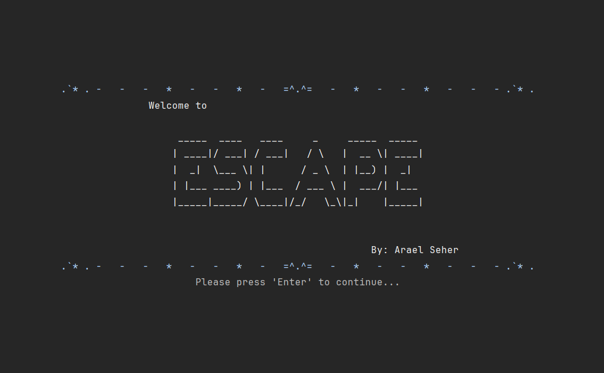

Escape | Text Adventure Game
This is a console-based text adventure game where the player controls a character attempting to escape a dark, multi-level castle filled with locked doors, hidden items, and guard encounters. I built it in C#, using an object-oriented design to manage game state, inventory limits, combat mechanics, and branching decision trees. The logic includes reusable components like dynamic menus, item interaction handlers, and life/death mechanics, all organized to keep the codebase maintainable as the narrative and options grow.
I focused on clean, testable architecture by separating content from logic, and I incorporated guard AI behavior, inventory constraints, and exploration mechanics. The challenge was designing a scalable structure for interactive storytelling while keeping performance tight and gameplay intuitive in a console environment.
Link to code on GitHub